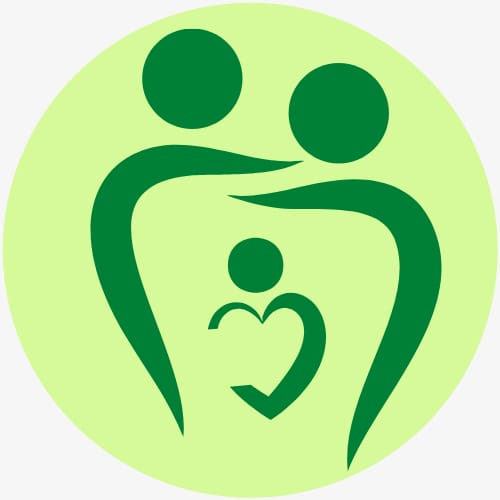

Merhabalar, bu yazımda sizlere sağlıklı bir aile ortamının özelliklerinden bahsedeceğim. Bu kapsamda yazı içerisinde yer vereceğim kavramlar; aile, sağlıklı aile, iletişim, sınırlar, empati, kurallar ve içsel denetim. Bu yazının devamını farklı konular ile tekrardan ele almayı planlıyorum. İlk olarak sağlıklı aile ortamının özellikleri ile başlamak istiyorum. Aile iç ve dış etkenlerden beslenen en küçük toplumsal birimdir. Bireyin tüm yaşamını etkileyen, ilk deneyimlerini, ilk öğrenmelerini, ilk farkındalıklarını oluşturduğu yerdir. Aile bireyin sosyalleşmesinde birincil öneme sahiptir. Her bireyin kendini var ettiği ilk yer aile ortamıdır. Sağlıklı aile denilince aklımıza neler gelmelidir? Sağlıklı aileler, insan ilişkisinde gerekli olan en temel özelliklere sahip olan aileler demektir. İnsan ilişkisinde gerekli olan bu temel özellikler; iletişim, sınırlar, empati, kurallar ve içsel denetimdir. Gelin şimdi bu kavramları teker teker irdeleyelim. İnsan ilişkisinde iletişim çok önemlidir. Çünkü bireyler anlaşabilmek, anlamlandırabilmek, fark edebilmek ve en önemlisi ilişki kurabilmek için iletişime ihtiyaç duyarlar. Bireyler arası ilişkide var olan iletişimin açık iletişim özelliği göstermesi gerekir. Bu şu demektir; ilişkideki bireyler birbirlerine ne hissettiklerini ve ne düşündüklerini açık açık söyleyebiliyor olmalıdır. Bireyler arası ilişkilerde her birey diğeri hakkında bilgi edinirken karşısındakinin izin verdiği ölçüye dikkat etmelidir. Karşısındakinin izin vermediği veya istemediği şeylerin bilgisini elde etmeye çalışmamalıdır. Dolayısıyla kişiye dair öğrenmelerimiz onun bize verdiği izin ölçüsünde olmalıdır. Bu kişinin sınırlarıdır ve saygı duyulmalıdır. Empati, bireylerin anlaşabilmesi ve anlaşılıyor olabilmesinde karşısındakine oldukça güven veren bir ortam oluşturur. Anlatılanı anlayabilmede ve karşı tarafın penceresiyle bakabilmede empati çok önemlidir. Bireye karşı tarafın gözüyle durumu değerlendirme imkanı sunar ve anlaşılabilirliği artırır. Her bireyin toplum içinde toplumla uyumlu, kendine özgü oluşturmuş olduğu kuralları vardır. İnsan ilişkisinde karşınızdaki kişinin yaşama dair kurallarını bilmek ilişkinize anlam katmaktadır. İçsel denetim; bireyin kendi kendini motive ederek harekete geçmesidir. Herhangi bir şeyi yapmada itici gücü kişinin kendisinde bulmasıdır. İletişim, sınırlar, empati, kurallar ve içsel denetim bireyler arası ilişkinin yapı taşları olduğu gibi sağlıklı aile ortamının oluşması için de gerekli yapı taşlarıdır. Bir ailede; Her birey kendini rahatça ifade edebiliyor ve ne hissettiğini açıkça söyleyebiliyorsa, Aile üyeleri birbirlerinin sınırlarını koruyor ve saygı duyuyorsa, Ailede bireyler birbirlerine epatik yaklaşıyor ve etkin bir şekilde dinliyorsa, Ailede belirgin fakat duruma göre değişebilen esnek kurallar varsa, Ailede her bir fert yapması gerekeni biliyor ve bunun için herhangi bir otoriteye ihtiyaç duymuyorsa, Bu aile sağlıklı bir aile ortamına sahiptir diyebiliriz. Ailede bu özellikler var ise çıkan çatışmalardan oluşan problemler hızlı bir şekilde çözülür ve aile dengeyi hızlı bir şekilde yeniden oluşturur. Bu aile ortamının oluşmasında ebeveynlere çok iş düşmektedir. Öncelikle eş olarak kendi ilişkileri sağlıklı olmalıdır ki aile ortamı da sağlıklı aile özelliği gösterebilsin…
